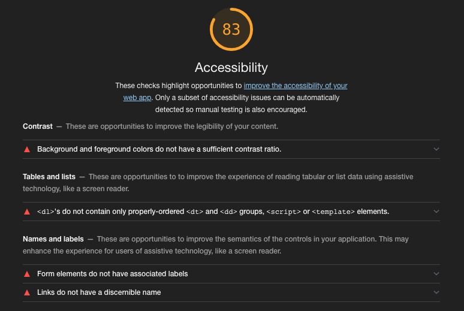

HEALTH SCIENCE LIBRARY
HOMEPAGE CRITIQUE
David King, Jr.
Presented @ UofL — September 11, 2019
David King, Jr.
- Software engineer
- Web App/UX/UI Designer
- Problem solver
- Mentor & trainer
- Spacemacs/VIM user
- Louisville native
- Introduced to the Internet here at UofL (c. 1993)
- Lastly...father of a cat
Enough about me...
Let's get to it!
EVALUATION CRITERIA
Some of the criteria I used to evaluate a homepage
Form
- Visual appeal
- Engaging user interface
- Layout consistency
- Good use of graphics
- Pixel perfection?!?
Function
- Places top resources Above-the-Fold
- Describes what the library has to offer
- Provides address/location/availability
- Provides staff information
- Library news/updates
- What is the library special for?
Accessibility
- W3C standards (Alt, Aria, etc.)
- HTML5 semantic markup (header, footer, etc.)
- Keyboard navigation
- Screen reader friendly
- Contrasting colors
ASSUMPTIONS
- Not all criteria were applicable
- Bypassed LibGuides-based homepages
- Critique is highly subjective...thus
- User feedback is most important gauge!
Let's look at some sites...
UNC CHAPEL HILL
Health Sciences Library
- Wordpress-Based Site (PHP)
- Bootstrap CSS Framework
- Uses custom template with semantic markup
- Keyboard navigation is good
UC IRVINE
Grunigen Medical Library
- Drupal-based Site (PHP)
- Bootstrap CSS Framework
- Uses custom template with semantic markup
- Keyboard navigation is good
UPSTATE MEDICAL COLLEGE HSL | SUNY
- Custom CMS (PHP)
- Bootstrap CSS Framework
- Custom semantic markup
- Keyboard navigation is good
Accessibility Report

QUESTIONS
This presentation was coded using
RevealJS